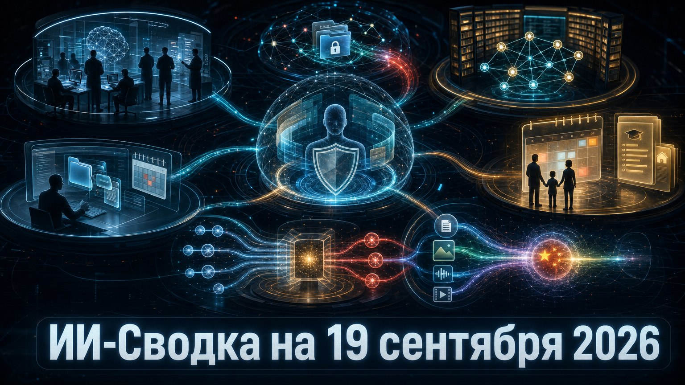

Повестка дня показывает, что агенты ИИ одновременно получают больше доступа к повседневным данным и действиям, а разработчики моделей ищут более постоянные способы внешней проверки их безопасности. Google и Meta* расширяют агентные продукты в семейные и настольные сценарии, тогда как Anthropic и Google DeepMind формализуют контуры оценки frontier-систем.
Отдельный сигнал пришёл из Испании: регулятор получил уведомление о предполагаемой утечке данных с применением агента ИИ. На модельном уровне китайская Qwen расширяет конкуренцию в мультимодальных системах с длинным контекстом.
Anthropic сообщила, что специалисты Faculty — ИИ-подразделения Accenture — будут работать внутри компании как embedded evaluator: проводить red teaming, alignment assessments и проверку защитных механизмов моделей. По данным TechCrunch, стороны ожидают вложить в проект не менее $1 млрд за пять лет.
Это не независимая сертификация в юридическом смысле: методики, доступ оценщиков к системам и гарантии их независимости пока не раскрыты. Но формат важен как переход от разовых внешних тестов к постоянной оценке моделей до и во время развёртывания; Anthropic также заявила о намерении объявить других оценщиков.
Испанское агентство по защите данных AEPD сообщило о первом полученном уведомлении о нарушении персональных данных, которое пострадавшая организация связывает с атакой с применением агента ИИ. Как пишет IT Pro, по описанию заявителя агент получил доступ через публично доступные файлы, сканировал внутреннюю систему, изменял персональные данные и обращался к счетам.
Расследование продолжается, а регулятор не назвал ни жертву, ни модель, ни атакующих. Поэтому нельзя считать автономность агента или техническую атрибуцию окончательно доказанными. Тем не менее это важный переход от лабораторных сценариев рисков агентов ИИ к публично заявленному инциденту с персональными данными.
Google и Google DeepMind запустили DeepMind Institute — площадку для исследований и обсуждения последствий AGI. В стартовую серию вошли четыре эссе об экономике, проверяемости рассуждений, благополучии людей и оценке frontier-моделей; о запуске сообщил TechCrunch.
Среди предложений — переход от добровольного представления наиболее мощных моделей на оценку до релиза к потенциально обязательным требованиям перед развёртыванием. Пока это позиция и исследовательская инициатива компании, а не новый отраслевой стандарт или государственное правило. Однако появление отдельного института показывает, что вопросы проверок и управления становятся самостоятельным направлением у разработчиков frontier-моделей.
Google представила обновлённый экспериментальный сервис CC — агента ИИ для управления семейными делами. Он может работать с почтой, календарями, чатами и списками задач, извлекать события из писем и добавлять их в общий календарь; доступ к данным каждый участник семьи предоставляет отдельно. Подробности запуска описал TechCrunch.
CC получает отдельный Google-аккаунт и работает на изолированном облачном компьютере с Gemini и агентной обвязкой Antigravity. Эксперимент пока ограничен совершеннолетними пользователями в США с личными Gmail-аккаунтами и поддерживает до шести участников. Главный вызов здесь не качество ответов, а управление разрешениями и общей памятью в среде, где данные принадлежат нескольким людям.
Meta сделала потребительского агента Muse доступным на Mac. По данным TechCrunch, при явно выданном разрешении агент может взаимодействовать с файлами, сообщениями, календарём, заметками и почтой в нативных приложениях macOS.
Это существенное расширение уже запущенного Muse: агент получает не только браузерный контекст, но и рабочий стол с личными приложениями. Meta заявляет, что чувствительные действия требуют подтверждения пользователя. Практическая ценность такого подхода будет зависеть от точности разграничения безопасных и необратимых операций, а также от прозрачности выданных прав.
TypeSafe AI представила Jev — модель, которая не генерирует текст, а выдаёт вероятностные калиброванные решения. Как сообщает TechCrunch, компания предлагает применять её для классификации, автоматизации ПО, маршрутизации запросов между моделями и контроля действий LLM-агентов.
Компания называет Jev быстрым «System One» слоем: он должен принимать дешёвые решения там, где развёрнутый ответ большой языковой модели избыточен. Заявления о качестве, скорости и стоимости пока в основном исходят от разработчика, а независимых сравнений немного. Однако сама архитектурная идея примечательна: агентные системы могут всё чаще строиться из нескольких специализированных моделей, а не одной универсальной LLM.
Alibaba Qwen выпустила Qwen3.8-Omni-Flash — нативную мультимодальную модель, принимающую текст, изображения, аудио и видео. По данным LLM Releases, модель получила контекст до миллиона токенов, поддержку function calling, структурированных ответов, web search и API, совместимых с DashScope и OpenAI.
Выход модели остаётся текстовым, поэтому это не универсальная система генерации мультимедиа, а прежде всего инструмент для агентных сценариев и обработки разнородного входного контекста: от длинных видео до рабочих документов. Характеристики и сценарии использования заявлены разработчиком; независимая оценка качества ещё потребуется. Но релиз усиливает Qwen в конкуренции за production-мультимодальность и длинные агентные задачи.
*Meta и ее сервисы - в России запрещены